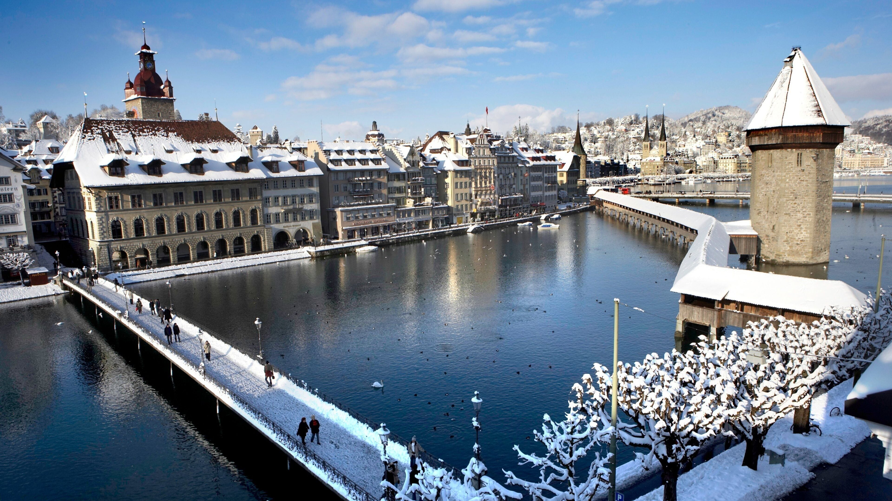

A Suíça é famosa por suas paisagens idílicas e, embora o país inteiro pareça saído de uma pintura, o Matterhorn em Zermatt é amplamente considerado o grande cartão-postal símbolo da Suíça. Com seu formato piramidal icônico, esta montanha estampa desde embalagens de chocolates (como o famoso Toblerone) até os guias de viagem mais prestigiados do mundo. Além do Matterhorn, outras três regiões disputam o título de cenários mais emblemáticos e fotografados do país.

Símbolo Alpino "Matterhorn (Zermatt)": Essa montanha imponente domina a charmosa vila de Zermatt, onde carros com motor a combustão são proibidos, preservando o ar puro e a atmosfera alpina. É o destino perfeito para quem quer ver de perto o pico mais famoso da Europa, seja esquiando ou pegando o trem de cremalheira até o mirante de Gornergrat.

O Vale das Cachoeiras "Lauterbrunnen" : Se você já viu um vídeo de uma vila suíça espremida entre paredões de pedra gigantescos com uma imensa cachoeira ao fundo, você estava olhando para Lauterbrunnen. São 72 cachoeiras no vale, com destaque para a de Staubbach, que despenca quase no centro do vilarejo.

A Suíça Clássica "Lucerna e a Kapellbrücke": Para um cartão-postal que mistura história medieval e lagos cristalinos, Lucerna é imbatível. A icônica Kapellbrücke (Ponte da Capela) é uma ponte de madeira coberta construída no século XIV e decorada com pinturas históricas, cruzando o rio Reuss com os Alpes ao fundo.

Vilas de Conto de Fadas "Grindelwald e Interlaken": A região de Jungfrau, onde ficam Interlaken e a charmosa vila alpina de Grindelwald, resume a imagem das casinhas de madeira (chalés) espalhadas por colinas intensamente verdes sob o olhar de montanhas cobertas de neve eterna.